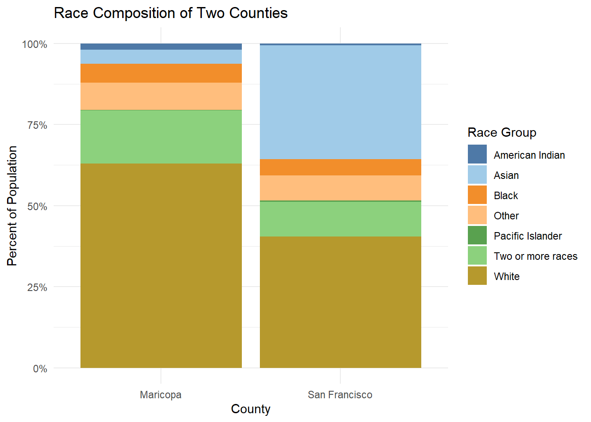
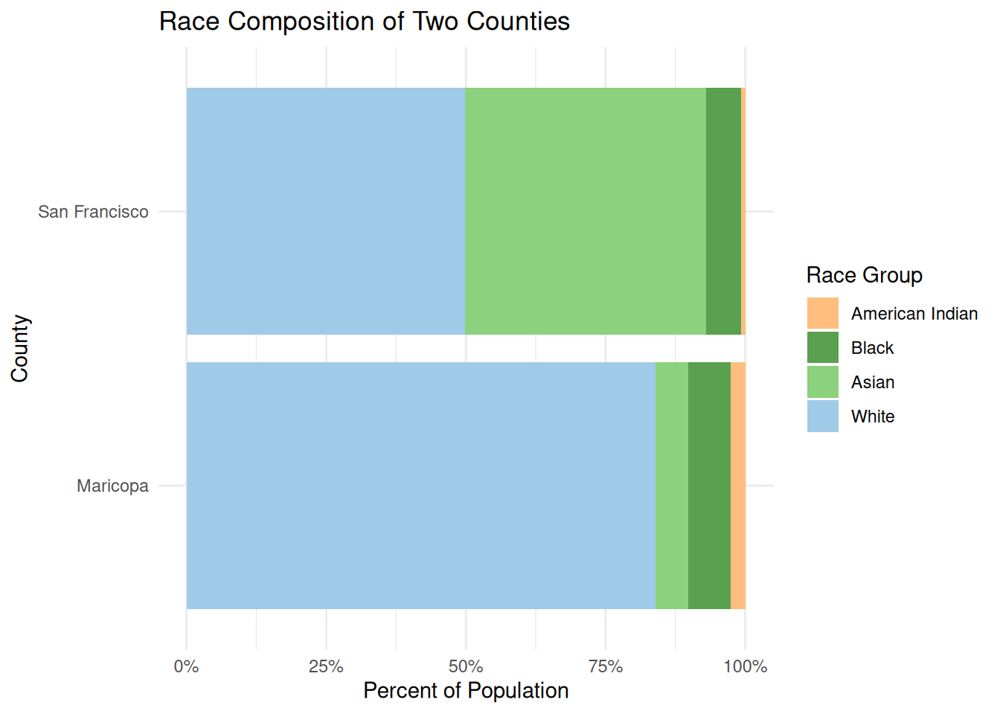
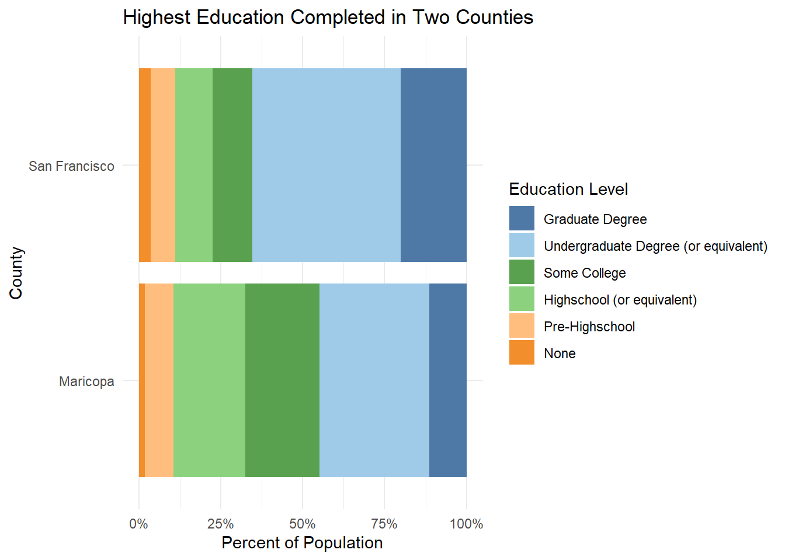
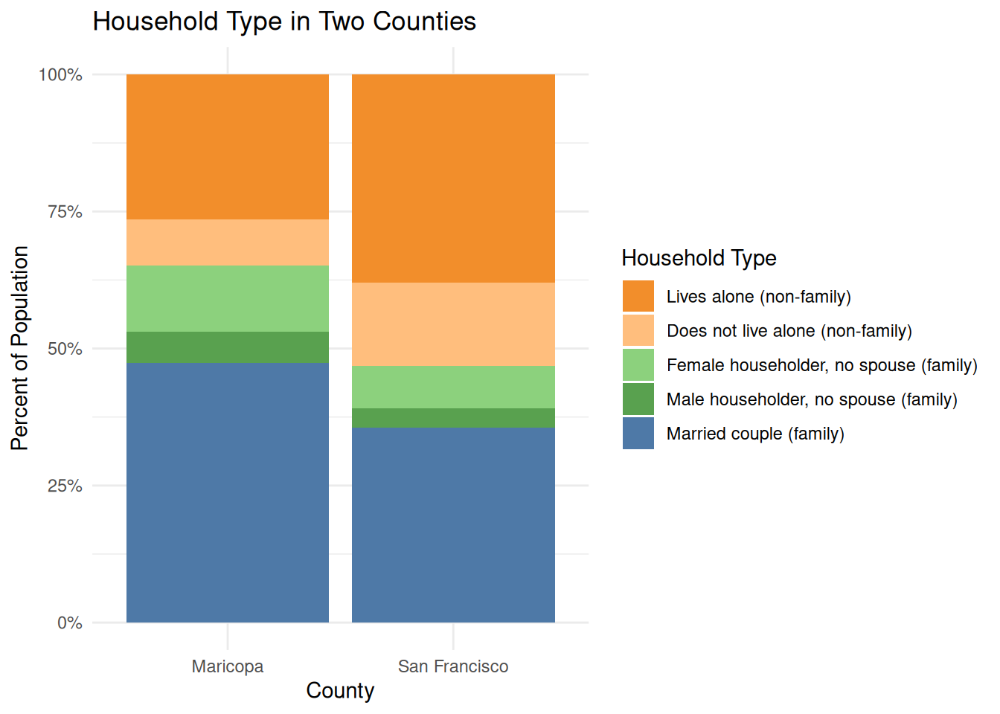
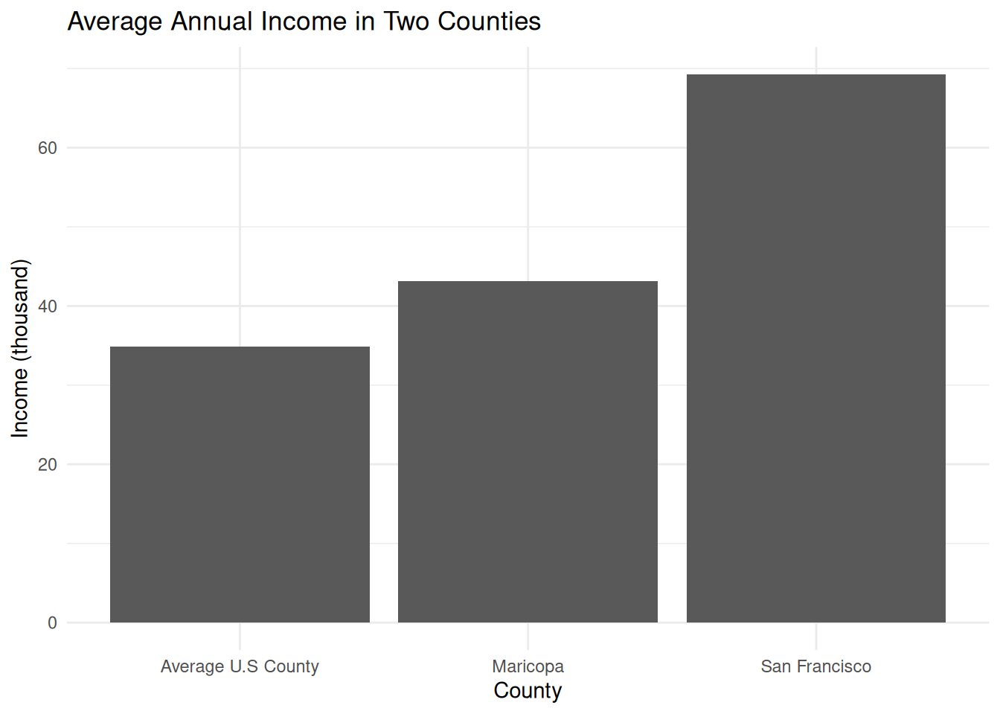

Member 2 First Name & Last Name Initial
Your exploratory data analysis of the team datasets go here.
Code
data <- rbind(sanfrancisco, mesa)
data <- data %>%
select(NAME, variable, estimate) %>%
rename("county" = "NAME",
"race" = "variable",
"population" = "estimate") %>%
mutate(race = case_when(
race == "B02001_002" ~ "White",
race == "B02001_003" ~ "Black",
race == "B02001_004" ~ "American Indian",
race == "B02001_005" ~ "Asian",
race == "B02001_006" ~ "Pacific Islander",
race == "B02001_007" ~ "Other",
race == "B02001_008" ~ "Two or more races"
)) %>%
mutate(county = case_when(
county == "San Francisco County, California" ~ "San Francisco",
county == "Maricopa County, Arizona" ~ "Maricopa"
))Code
data %>%
group_by(county) %>%
mutate(prop = population / sum(population)) %>%
ggplot(aes(x = county, y = prop, fill = race)) +
geom_bar(stat = "identity", position = "fill") +
scale_y_continuous(labels = scales::percent) +
labs(title = "Race Composition of Two Counties",
x = "County",
y = "Percent of Population",
fill = "Race Group") +
scale_fill_manual(values = c(
"#4E79A7", # steel blue
"#A0CBE8", # light blue
"#F28E2B", # orange
"#FFBE7D", # light orange
"#59A14F", # muted green
"#8CD17D", # light green
"#B6992D" # olive gold
)) +
theme_minimal()
Code
data5 <- data %>%
filter(race %in% c("White", "Black", "Asian", "American Indian")) %>%
mutate(race = factor(
race,
levels = c(
"American Indian",
"Black",
"Asian",
"White"
)
))
data5 %>%
group_by(county) %>%
mutate(prop = population / sum(population)) %>%
ggplot(aes(x = county, y = prop, fill = race)) +
geom_bar(stat = "identity", position = "fill") +
scale_y_continuous(labels = scales::percent) +
labs(title = "Race Composition of Two Counties",
x = "County",
y = "Percent of Population",
fill = "Race Group") +
scale_fill_manual(values = c(
"#FFBE7D",
"#59A14F",
"#8CD17D",
"#A0CBE8"
)) +
theme_minimal() +
coord_flip()
Code
sanfrancisco2 <- get_acs(
state = "CA",
county = "San Francisco",
geography = "county",
variables = c("B15003_002","B15003_003","B15003_004","B15003_005",
"B15003_006","B15003_007","B15003_008","B15003_009","B15003_010",
"B15003_011","B15003_012","B15003_013","B15003_014","B15003_015",
"B15003_016","B15003_017","B15003_018","B15003_019","B15003_020",
"B15003_021","B15003_022","B15003_023","B15003_024","B15003_025"),
year = 2023
)Code
mesa2 <- get_acs(
state = "AZ",
county = "Maricopa",
geography = "county",
variables = c("B15003_002","B15003_003","B15003_004","B15003_005",
"B15003_006","B15003_007","B15003_008","B15003_009","B15003_010",
"B15003_011","B15003_012","B15003_013","B15003_014","B15003_015",
"B15003_016","B15003_017","B15003_018","B15003_019","B15003_020",
"B15003_021","B15003_022","B15003_023","B15003_024","B15003_025"),
year = 2023
)Code
data2 <- rbind(sanfrancisco2, mesa2)
data2 <- data2 %>%
select(NAME, variable, estimate) %>%
rename("county" = "NAME",
"education" = "variable",
"population" = "estimate") %>%
mutate(education = case_when(
education == "B15003_002" ~ "None",
education == "B15003_003" ~ "Nursery",
education == "B15003_004" ~ "Kindergarten",
education == "B15003_005" ~ "Kindergarten",
education == "B15003_006" ~ "Kindergarten",
education == "B15003_007" ~ "Kindergarten",
education == "B15003_008" ~ "Kindergarten",
education == "B15003_009" ~ "Elementary",
education == "B15003_010" ~ "Elementary",
education == "B15003_011" ~ "Elementary",
education == "B15003_012" ~ "Elementary",
education == "B15003_013" ~ "Middle",
education == "B15003_014" ~ "Middle",
education == "B15003_015" ~ "Middle",
education == "B15003_016" ~ "Middle",
education == "B15003_017" ~ "Highschool (or equivalent)",
education == "B15003_018" ~ "GED",
education == "B15003_019" ~ "Some College",
education == "B15003_020" ~ "Some College",
education == "B15003_021" ~ "Associate's",
education == "B15003_022" ~ "Bachelor's",
education == "B15003_023" ~ "Master's",
education == "B15003_024" ~ "Professional",
education == "B15003_025" ~ "Doctorate"
)) %>%
mutate(education = case_when(
education == "None" ~ "None",
education == "Nursery" ~ "Pre-Highschool",
education == "Kindergarten" ~ "Pre-Highschool",
education == "Elementary" ~ "Pre-Highschool",
education == "Middle" ~ "Pre-Highschool",
education == "Highschool (or equivalent)" ~ "Highschool (or equivalent)",
education == "GED" ~ "Highschool (or equivalent)",
education == "Some College" ~ "Some College",
education == "Associate's" ~ "Undergraduate Degree (or equivalent)",
education == "Bachelor's" ~ "Undergraduate Degree (or equivalent)",
education == "Professional" ~ "Undergraduate Degree (or equivalent)",
education == "Master's" ~ "Graduate Degree",
education == "Doctorate" ~ "Graduate Degree",
)) %>%
mutate(county = case_when(
county == "San Francisco County, California" ~ "San Francisco",
county == "Maricopa County, Arizona" ~ "Maricopa"
))Code
data2 <- data2 %>%
group_by(county) %>%
mutate(prop = population / sum(population)) %>%
mutate(education = factor(
education,
levels = c(
"Graduate Degree",
"Undergraduate Degree (or equivalent)",
"Some College",
"Highschool (or equivalent)",
"Pre-Highschool",
"None"
)
))
data2 %>%
ggplot(aes(x = county, y = prop, fill = education)) +
geom_bar(stat = "identity", position = "fill") +
scale_y_continuous(labels = scales::percent) +
labs(title = "Highest Education Completed in Two Counties",
x = "County",
y = "Percent of Population",
fill = "Education Level") +
scale_fill_manual(values = c(
"#4E79A7",
"#A0CBE8",
"#59A14F",
"#8CD17D",
"#FFBE7D",
"#F28E2B"
)) +
theme_minimal() +
coord_flip()
Code
data3 <- rbind(sanfrancisco3, mesa3)
data3 <- data3 %>%
select(NAME, variable, estimate) %>%
rename("county" = "NAME",
"household" = "variable",
"population" = "estimate") %>%
mutate(county = case_when(
county == "San Francisco County, California" ~ "San Francisco",
county == "Maricopa County, Arizona" ~ "Maricopa"
)) %>%
mutate(household = case_when(
household == "B11001_003" ~ "Married couple (family)",
household == "B11001_005" ~ "Male householder, no spouse (family)",
household == "B11001_006" ~ "Female householder, no spouse (family)",
household == "B11001_008" ~ "Lives alone (non-family)",
household == "B11001_009" ~ "Does not live alone (non-family)"
))Code
data3 %>%
group_by(county) %>%
mutate(prop = population / sum(population)) %>%
ggplot(aes(x = county, y = prop, fill = household)) +
geom_bar(stat = "identity", position = "fill") +
scale_y_continuous(labels = scales::percent) +
labs(title = "Household Type in Two Counties",
x = "County",
y = "Percent of Population",
fill = "Household Type") +
scale_fill_manual(values = c(
"#4E79A7",
"#F28E2B",
"#FFBE7D",
"#59A14F",
"#8CD17D"
)) +
theme_minimal()
Code
data4 <- rbind(sanfrancisco4, mesa4)
data4 <- data4 %>%
select(NAME, estimate) %>%
rename("county" = "NAME",
"income" = "estimate") %>%
mutate(county = case_when(
county == "San Francisco County, California" ~ "San Francisco",
county == "Maricopa County, Arizona" ~ "Maricopa"),
income = income/1000)Code
ggplot(data4, aes(x = county, y = income)) +
geom_bar(stat = "identity") +
theme_minimal() +
labs(title = "Average Annual Income in Two Counties",
x = "County",
y = "Income (thousand)") +
scale_fill_manual(values = c(
"Average U.S County" = "#1b9e77",
"Maricopa" = "#d95f02",
"San Francisco" = "#7570b3"
))